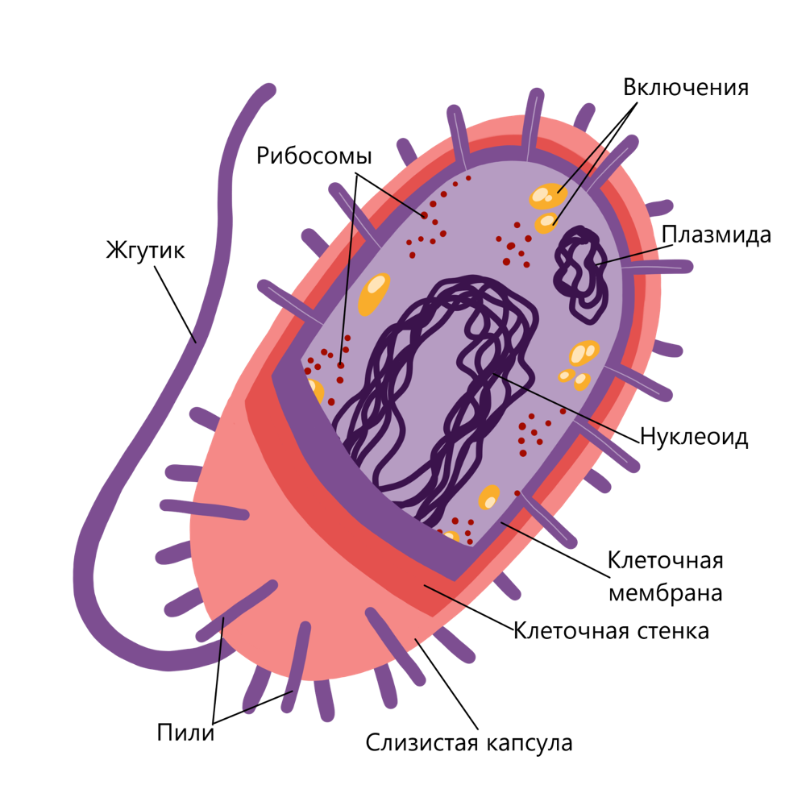
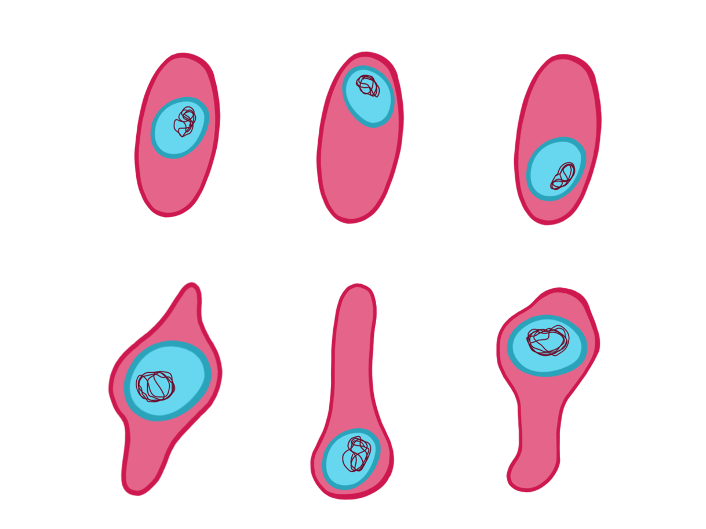

Поверхностный аппарат
Все клетки, в том числе и клетки прокариот, окружены цитоплазматической мембраной. Она изолирует содержимое клетки от окружающей среды, осуществляет транспорт веществ из клетки и в клетку, воспринимает сигналы из окружающей среды. Таким образом, мембрана обеспечивает поддержание постоянства внутриклеточной среды.
Поверх мембраны у прокариот (за исключением некоторых паразитических групп) находится клеточная стенка. Она выполняет функцию механической защиты клетки от внешних повреждений и давления воды изнутри клетки (в результате осмоса). У настоящих бактерий в основе клеточной стенки лежит муреин. Муреин — пептидогликан, который представляет собой длинные полисахаридные цепи, сшитые короткими пептидными мостиками. В результате формируется непрерывная молекулярная сетка, окружающая всю бактериальную клетку.
По строению поверхностного аппарата бактерии делятся на две большие группы — грамположительные (грам+) и грамотрицательные (грам–). Эти названия даны из-за разной способности таких клеток окрашиваться по Граму (определенный метод окрашивания).
- У грамположительных бактерий муреиновый слой достаточно толстый. Также в их клеточной стенке содержатся особые соединения — тейхоевые кислоты.
- У грамотрицательных бактерий тонкий муреиновый слой сверху покрыт второй мембраной. Между мембранами имеется периплазматическое пространство.
У некоторых видов бактерий поверх клеточной стенки имеется дополнительный внешний слой, называемый капсулой. В отличие от стенки, он неплотный, прозрачный. Он состоит из непрочно связанных между собой полисахаридов и защищает клетку от механических повреждений, а в случае болезнетворных бактерий — от защитных систем организма-хозяина.
Внутреннее строение
На электронной микрофотографии внутри бактериальной клетки в электронный микроскоп можно увидеть области разной плотности.
Более прозрачная для электронов (светлая) часть содержит ДНК и называется нуклеоидом (греч. «нуклеус» — ядро, «ойдес» — подобный). Она не отделена от остальной части клетки, называемой цитоплазмой, и имеет примерно такой же состав. ДНК у прокариот представлена, как правило, одной кольцевой молекулой, в определенной точке прикрепленной к цитоплазматической мембране
По всему внутреннему пространству клетки бактерий разбросаны рибосомы, количество которых может достигать 10 000 на клетку. Из-за этого цитоплазма выглядит на электронной микрофотографии более темной, гранулярной.
В клетках бактерий, зафиксированных и подготовленных для электронной микроскопии, можно увидеть немногочисленные впячивания цитоплазматической мембраны. Впервые такие впячивания обнаружили в конце 50-х годов ХХ века и назвали мезосомами. Долгое время считалось, что мезосома является у прокариот местом синтеза АТФ. Согласно современным научным данным, скорее всего, мезосомы — это артефакты — дефекты, возникающие при химической фиксации бактериальных клеток, а процессы окисления веществ (клеточного дыхания) происходят на разных участках мембраны.
Иногда в клетках некоторых бактерий наблюдаются гранулы каких-либо веществ. Они могут содержать запасные питательные вещества (полисахариды, капли жира, полифосфаты) или отходы обмена веществ, которые клетки не могут вывести наружу (сера, окислы железа и др.). Такие гранулы называются включениями.
Снаружи от оболочки бактериальной клетки могут располагаться длинные нитевидные структуры двух типов. Первые из них — жгутики — представляют собой белковые спирали, способные вращаться относительно мембраны бактериальной клетки и обеспечивать движение бактерий за счет «ввинчивания» бактерии в среду. Жгутики есть не у всех бактерий. Вторая группа нитей — пили — не способна к движению, но обеспечивает прикрепление бактерий к другим клеткам.
Cпорообразование
Некоторые бактерии способны образовывать споры. Споры у бактерий служат не для размножения, а для перенесения неблагоприятных условий. Спора образуется внутри клетки (одна в каждой клетке). В ее состав обязательно входит генетический материал бактерии. Спора одевается плотной оболочкой, после чего все оставшиеся внешние части клетки отмирают.
Споры бактерий, как правило, выдерживают кипячение. Уничтожить их можно только путем автоклавирования (обработка паром под давлением, обычно при температуре 120о С), прокаливания. Уничтожение всех бактерий и их спор называется стерилизацией.
ЭКОЛОГИЯ БАКТЕРИЙ
Бактерии способны существовать в самых разнообразных условиях. Их находят в атмосфере на высоте нескольких километров и на дне океанов. Некоторые виды бактерий живут даже на глубине нескольких километров под землей в нефтяных и угольных пластах.
Бактерии, несмотря на свои малые размеры, осуществляют крупномасштабные процессы в биосфере.
- Бактерии являются одной из важнейших групп редуцентов — организмов, осуществляющих разложение мертвого органического вещества.
- Многие бактерии способны осуществлять образование органических веществ из неорганических,
то есть являются автотрофами. Они могут делать это за счет фотосинтеза с использованием энергии
света (фотоавтотрофы, прежде всего цианобактерии — зеленые, содержат хлорофилл, являются предками
хлоропластов) или хемосинтеза — окисления неорганических веществ (хемоавтотрофы).
Таким образом, прокариоты могут являться производителями биомассы — продуцентами, в некоторых биоценозах важнейшими или единственными. Так, бактерии-хемосинтетики, прежде всего, окисляющие сероводород, являются единственными продуцентами в глубоководных экосистемах черных и белых курильщиков — океанических геотермальных источников.
- Только бактерии способны превращать молекулярный азот атмосферы в азот органических соединений, т. е. осуществлять азотфиксацию. Фиксируют азот, например, клубеньковые бактерии — симбионты бобовых растений, а также цианобактерии.
БАКТЕРИИ И ЧЕЛОВЕК
Бактерии играют важную роль в жизни человека.
- Прежде всего надо сказать о болезнетворных бактериях, вызывающих различные заболевания человека, домашних животных и культурных растений.
- Кроме того, бактерии вызывают порчу продуктов питания и разрушение различных материалов.
- Ряд бактерий используется человеком в его хозяйственной деятельности. Бактерии используются в пищевой промышленности для получения йогуртов, простокваши, сыров и ряда других молочнокислых продуктов. Благодаря бактериям осуществляются процессы квашения капусты, засолки огурцов, силосования кормов.
- Осуществляемые бактериями процессы брожения являются промышленным источником ряда веществ, таких как ацетон, молочная и масляная кислота.
- 5. Некоторые бактерии и близкие к ним актиномицеты вырабатывают антибиотики, используемые в медицине. Бактерии являются источником для получения ряда ферментов, используемых в пищевой промышленности, медицине и других отраслях.
АРХЕИ
Безъядерные, то есть прокариотные, клетки, имеет и совершенно особая группа живых организмов, отличающаяся и от бактерий, и от эукариот, — археи. По размерам и строению клетки архей очень похожи на клетки бактерий, но сильно отличаются по биохимическим и молекулярно-биологическим признакам. Например, у части архей мембрана совершенно не похожа на мембраны всех остальных организмов — она состоит не из фосфолипидов, а из простых эфиров полиизопреноидных спиртов (то есть спиртов, образованных единицами изопрена, как, например, натуральный каучук). Клеточная стенка архей состоит либо из псевдомуреина, напоминающего муреин, либо из белков, что также не встречается у других организмов. Археи, в отличие от других бактерий, никогда не образуют спор.
Изначально считалось, что все археи — экстремофилы, то есть обитают в экстремальных условиях. Археи живут в насыщенных солью озерах, таких как Мертвое море. Также они обитают в горячих источниках, где температура может превышать 100о С. Однако впоследствии археи были обнаружены и в других местообитаниях, включая почву, океаны, болота и толстую кишку человека. Многочисленны археи среди океанического планктона. Археи играют важную роль в круговоротах углерода и азота. Ни один из известных представителей архей не является паразитом или болезнетворным организмом, однако для них часто характерен симбиоз или комменсализм. Метанообразующие археи обитают в пищеварительном тракте человека и жвачных, где многочисленны и участвуют в процессах пищеварения. Метаногенные археи используются в производстве биогаза и очистке канализационных сточных вод. Ферменты архей-экстремофилов, сохраняющие активность при высоких температурах и в контакте с органическими растворителями, находят свое применение в биотехнологии.